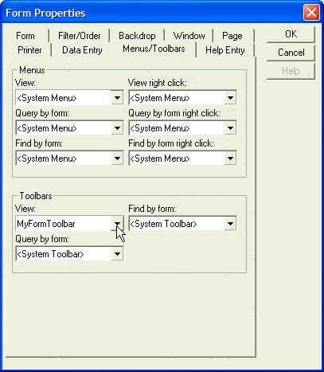

Specifying the Toolbar for a Layout
To specify the toolbar for a form, browse, report, letter, or label:
Optionally design custom toolbar(s) and save them. See Creating Custom Toolbars.
Open the form or browse in design mode and press F12 to access its Properties dialog.
Show the Menus/Toolbars tab.
Select your customized toolbar(s) from the appropriate drop-down list box, and click OK.

Specify "
" to turn off a toolbar, or specify " " to use the system default toolbar.
See Also